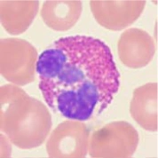
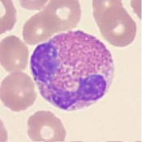
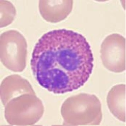

Eosinophils participate in defense against some parasitic worms and in allergic inflammation. Their powerful granule proteins can affect both parasites and our own tissues.
REAL BLOOD-FILM PHOTOGRAPH
Cheong et al., 2026 · PBC / Acevedo et al. · Figure 1 · CC BY 4.0. Cropped; WebP.
What to look for
Read the cell.
Usually two nuclear lobes
A connecting strand joins the two purple lobes.
Bold pink-orange granules
Large, distinctive granules fill the cytoplasm and help identify the cell on a stained blood film.
From precursor to specialist
Follow the maturation.
Choose a stage to see what changes.

Real eosinophil microscopyRepresentative mature eosinophil morphology. This photo does not depict the named precursor stage or a cell undergoing maturation.Wang et al. (2019), Fig. 2I, row 1. CC BY 4.0.
BONE MARROW
Early granulocyte precursors
After commitment to this lineage, immature blast and promyelocyte stages begin building the cell’s granule equipment.

Real eosinophil microscopyRepresentative mature eosinophil morphology. This photo does not depict the named precursor stage or a cell undergoing maturation.Wang et al. (2019), Fig. 2I, row 2. CC BY 4.0.
BONE MARROW
Eosinophil myelocyte
Characteristic granules become recognizable as the cell specializes along its own lineage.

Real eosinophil microscopyRepresentative mature eosinophil morphology. This photo does not depict the named precursor stage or a cell undergoing maturation.Wang et al. (2019), Fig. 2I, row 3. CC BY 4.0.
BONE MARROW
Later precursor stages
The nucleus becomes indented and then more lobed as maturation proceeds through metamyelocyte and band forms.
Real eosinophil microscopyRepresentative mature eosinophil morphology.Cheong et al. (2026), Fig. 1, PBC dataset / Acevedo et al. CC BY 4.0.
BLOOD → TISSUES
Mature eosinophil
Pink-orange granules and a usually bilobed nucleus characterize the mature eosinophil.
The text explains development. All four photos show representative mature eosinophil morphology; they are not a photographic maturation sequence. Precursor stages are not pictured.
On the job
How they protect you.
01
Respond to some parasites
Granule contents can damage targets too large for a white cell to engulf.
02
Participate in allergy
Eosinophils can accumulate in allergic inflammation, including some forms of asthma.
03
Act in tissues
They leave the circulation in response to signals. Uncontrolled activation can cause tissue injury.